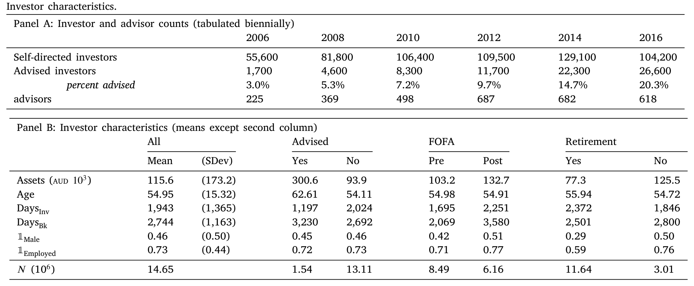
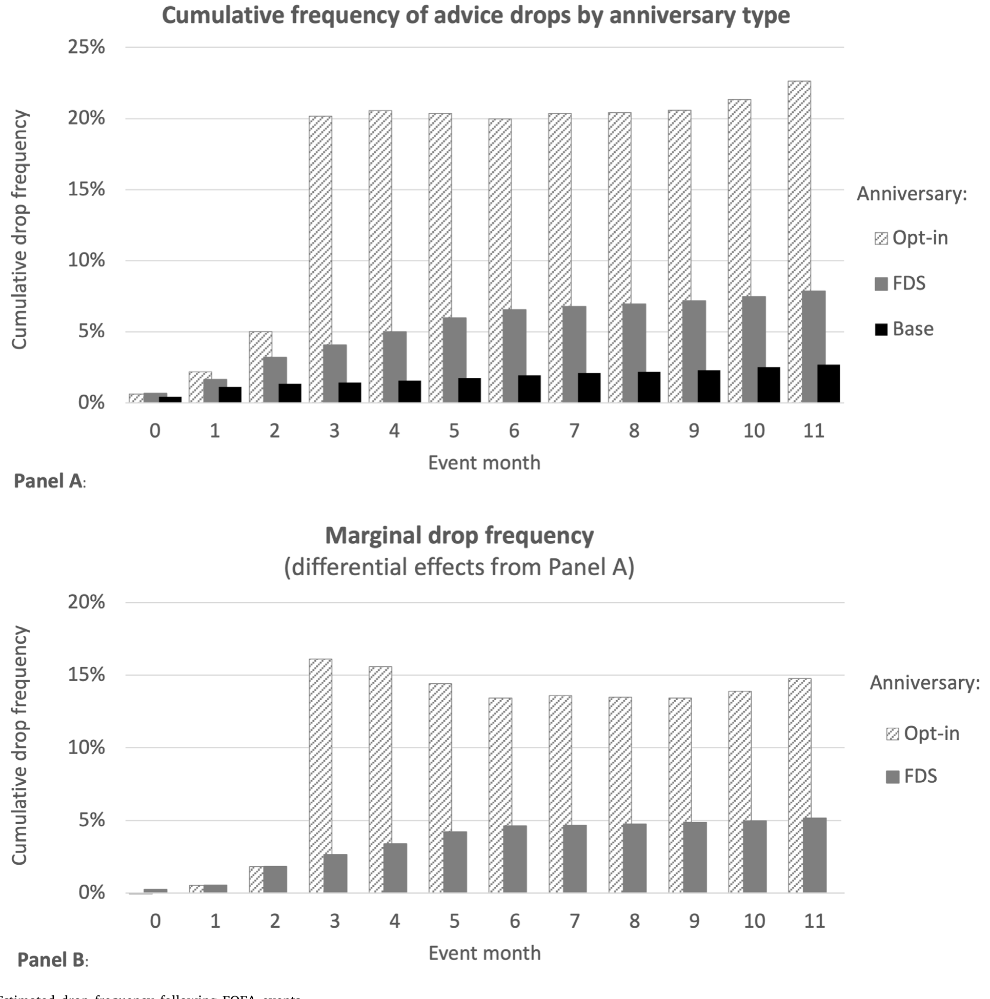
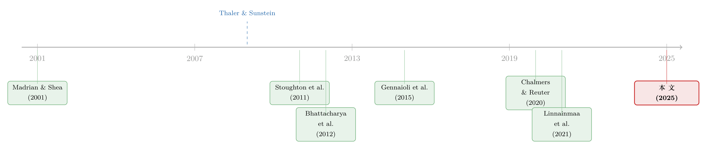

把「健忘的人」推出门：一场关于默认选项的监管实验
本文读的是 Edelen, Fong & Han (2025, Journal of Financial Economics)：澳大利亚 FOFA 改革同时上了两道「助推」——一份看得见钱数的费用披露 (FDS)，和一个「不主动续约就自动终止」的默认选项 (auto-drop)。前者让相对成熟的投资者更用心地重新评估建议、做出大体正确的取舍；后者却专挑那些「不看信也不回信」的不成熟投资者下手，把他们从真正能让他们受益的付费建议里推了出去。一句话：作用于「注意力」的披露把对的人留下，作用于「不注意」的默认却把对的人赶走。
1 一个让监管者尴尬的问题
先讲一件让人有点不舒服的事。
监管者想保护投资者，最常用的两件工具，一是「让信息更显眼」，二是「替你设一个聪明的默认」。前者背后的信念是：只要把成本明明白白写出来，理性人自会算账；后者背后的信念则更悲观一点——人是健忘的、是惯性的，与其指望他算账，不如直接替他把开关拨到「对」的那一档（这套思路的经典文本，就是 Thaler 和 Sunstein 那本《助推》(Nudge, 2009)）。
这两件工具，单看都很有道理。可一旦它们针对的是同一群人、同一个决定，麻烦就来了。因为「让信息更显眼」只对会去看信息的人有用；而「设一个默认」恰恰是为不看信息的人准备的。于是一个自然的问题浮出水面：如果一个决定本身是复杂的、对不同人价值天差地别的，那么这个替人拨好的「默认档」，到底是把人拨向了对的一边，还是错的一边？
付费财务建议 (fee-based financial advice)，正是这样一个决定。它复杂、不透明（Carlin (2009) 甚至论证过，零售金融市场里的价格复杂性是被故意制造出来的），而它的价值又因人而异。全球家庭每年为财务建议付出大约 $100 billion，约合被管理资产的 0.7%；按三十二年的投资期限复利下来，这笔费用会侵蚀掉累计储蓄的近 20%——一个和 French (2008) 估算的主动管理成本惊人相似的数字。这么大一笔钱，值不值得投资者「上点心」？而当监管者出手替他们「上心」时，又会发生什么？
这篇论文，就是借澳大利亚一场独一无二的改革，把这两件工具拆开、摆到台面上，一件一件称重。
2 一场「两层」的天然实验
故事的舞台是澳大利亚 2013 年 7 月生效的《金融建议的未来法案》(Future of Financial Advice, FOFA)。这部法律一口气立了三条新规：
- 第一，禁止共同基金向把投资者引流进来的顾问付费（FOFA 称之为「利益冲突报酬」，在美国叫 revenue sharing）。
- 第二，顾问必须在每个建议周年日，向投资者递交一份费用披露声明 (Fee Disclosure Statement, FDS)。
- 第三，每隔一个周年，顾问还要随 FDS 附上一份选择加入通知 (opt-in notice)：如果投资者不在
60天内明确续约，建议服务就在次月自动终止——作者把这个机制叫做 auto-drop。
第一条（佣金禁令）在这家公司里没法研究，因为它的建议费本就直接向投资者收取、与基金销售无关。真正让这篇论文站得住脚的，是后两条——它们恰好构成一个「两层」的天然实验。
为什么说「两层」很关键？因为 FDS 和 auto-drop 表面上都是「促使你重新考虑要不要继续付费」，骨子里却作用于人心的两个完全不同的部位：
- FDS 是一份朴素到极致的「大白话」文件：它只写两件事——你为建议付了多少钱（以美元计）、你得到了哪些具体服务，此外别无他物（论文附录 A 给出了行业协会的模板）。它不替你做任何决定，只是把成本摆到你眼前。所以它是一把测量「披露是否够显眼」的利刃。
- auto-drop 则是一个「你不吭声我就替你做主」的默认：它在你沉默时主动终止一份正在生效的合同。
把这两件事放到一起，就有了这篇论文最妙的一招。
3 识别策略：怎么把「不注意」直接量出来
读到这里，懂行的读者一定会问：研究「披露」的文献那么多，这篇凭什么特别？
答案藏在一个细节里。一般研究披露的文献，只能观测到「肯定式」的反应——你看到披露后主动做了某件事（赎回、转户、投诉），研究者才能记录下来；至于那些看了披露却什么都没做的人，到底是「看了之后决定不动」还是「压根没看」，是分不清的。
而 auto-drop 把这层窗户纸捅破了。它的逻辑链条是这样的：opt-in 通知和 FDS 同时送达。如果一个投资者真的看了 FDS、并且经过深思熟虑决定不再要建议，那么理性的做法是当场就退出——这样能省下后面两个月的费用，何必拖到 60 天大限被动地被「自动终止」？所以，凡是熬到 auto-drop 才被踢出去的人，几乎可以断定根本没认真读那封信。于是：
auto-drop 的发生率，就是一个对「显眼披露」依然视而不见的、干净而直接的「不注意」(inattention) 测度。这正是这套设定独一无二的地方——它把别的研究只能间接猜测的东西，变成了一个可以直接数出来的频率。
具体到计量，作者用的是事件研究 (event study)：以每个投资者的 FDS 周年日、以及 opt-in 周年日为事件时点，对照 FOFA 之前的「基准」掉单率，算出事件之后逐月的异常掉单率 (abnormal drop rate)。FDS 事件每年都有，opt-in/auto-drop 事件每两年一次。横截面上，他们先用一个线性概率模型 (linear probability model) 把掉单率回归到投资者特征上（用线性模型是为了直接读出边际效应），再把这些基准依赖关系当作控制项，去识别两道助推各自的增量影响。
4 数据
数据来自一家大型澳大利亚财务规划公司，按保密协议提供。它覆盖 265,593 名投资者从 2006 到 2016 年的共计逾 1,400 万条月度持仓记录。每位投资者都可以随时在「自己管」(self-directed) 和「请顾问」(advised) 之间切换；公司平台提供约 900 只共同基金。值得一提的是，这里没有幸存者偏差——离开平台的人依然留在样本里。

Table 1
几个值得记住的数字（见表 1）：付费建议的投资者，平均资产约 $300,000，是自管投资者（约 $94k）的三倍多；平均年龄 62.6 岁，明显高于自管者的 54.1 岁。这本身就传递了一个信号——越成熟（越富、越年长）的人，越倾向于主动购买建议。还有一个对后文至关重要的制度细节：这家公司的建议费是按美元定额收取的，自管者年均 0.56%、付费建议者 0.82%，建议的增量费率约为 0.26%/年。定额收费意味着小账户付出的百分比费率更高——这一点后面会回来咬我们一口。
5 主要结果：两道助推，两种力气
先看投资者本就有多「上心」。FDS 出现之前，建议的基准掉单率约为每月 0.75%——谈不上勤勉，但也不是全然麻木。
第一道助推，FDS。 它确实点醒了一部分人。事件发生后六个月，累计的异常掉单率显著上升到基准之上的 4%–5%。结论很清楚：相比旧制度下那种不透明的披露，显眼的费用披露改善了投资者对建议决定的注意力。
第二道助推，opt-in/auto-drop。 它的力气大得多——在基准和 FDS 之上，又带来 13%–16% 的累计掉单增量。而且这个效应有两个吓人的特征：一是离散，几乎都卡在 60 天大限那一刻集中爆发；二是几乎不可逆——只有约 1% 的 auto-drop 后来又转回了建议。

Figure 1: Estimated drop frequency following FOFA events
如图 1 所示，FOFA 事件之后掉单频率的跳升清晰可见，而 opt-in 周年那一档的跳升尤其陡峭。把这两个数字摆在一起看——4%–5% 对 13%–16%——一个令人不安的画面就浮现了：真正把人推出门的，不是那份让人看清成本的披露，而是那个趁人不注意的默认。
接着，一个自然的问题是：被这两道助推推走的，是同一批人吗？不是。作者把投资者特征（资产、年龄、投资年限、性别、是否在职、是否持有退休基金）标准化后做横截面回归，发现一个漂亮的对称：FDS 对相对成熟的投资者（更富、更年长、更以退休为目标的人）影响更大——这些人本就倾向于注意；而 auto-drop 则更多落在相对不成熟的投资者（年轻、不那么富有）头上——这正是「不注意」的标志。从掉单回归里也能读出方向：掉单概率对 log Assets 的系数为 −0.071、对 log Age 为 −0.2026、对 1Male 为 +0.0326，越成熟越不容易（被）掉单，与上面的故事一致。
6 真正关键的一步：被推走，到底是好事还是坏事？
到这里，如果你心里默认「付费建议反正是坑钱的，被推出去总归是好事」，那这篇论文最关键的反转就要来了。
这个默认其实来自一长串文献：佣金制下，经由顾问销售的基金在费前、费后都跑输直销基金（Bergstresser, Chalmers & Tufano (2008)；Christoffersen, Evans & Musto (2013)）。可问题是——这家公司的建议是付费制、不是佣金制，利益冲突远没那么明显。把佣金制的结论硬套到付费制上，是没有根据的。Chang & Szydlowski (2020) 甚至从理论上指出，禁掉利益冲突的费用未必能改善投资者福利。
于是作者做了一件别人做不了的事：直接估计付费建议的价值，并把它和投资者特征挂钩。结果是——相比自管组合，被建议的组合收益更高、费用更低、分散度更好、股票敞口与年龄的匹配也更合理。更要命的是，即便扣掉服务费和顾问费，付费建议依然显著抬高了「净服务费后收益」，而且这种好处对年轻投资者、以及资产可观、投资经历丰富、在职的人尤其大。换句话说——最该留住建议的，恰恰是那些不成熟的、被 auto-drop 最容易踢出去的人。
把这两条线索拼起来，论文提出了一个干净的检验：让两道助推分别去和一个「建议价值的工具变量」交互（这个工具用投资者特征构造），看哪道助推更能把「受益更少」的人筛出去。结论是：
- FDS 通过了甄别检验：无论用事前的预测收益还是事后的实现收益，受益更少的人确实更容易在 FDS 之后退出。
- auto-drop 没通过：被自动踢出去的人里，反而是预测收益更高的那批更多；用实现收益看也找不到可靠的区分。
这就把全篇钉死在了一句话上：
FDS——它需要你的注意——把相对成熟的投资者引向了大体正确的取舍；而 auto-drop——它作用于你的不注意——把相对不成熟的投资者引向了一个看起来是错的决定。一个本意保护弱者的默认，结果精准地伤害了弱者。这正是「过度助推」(over-nudging) 的样子。
作者很克制地给这个结论留了两条注脚。其一，被 auto-drop 之后的 12 个月里，建议带来的好处并没有可靠地反转，说明这些人事后未必更糟（毕竟事已至此）。其二，那个按美元定额的服务费，本就对小账户不利（Thiel (2022) 论证过这种「建议鸿沟」），构成一个对小投资者的偏见；可即便如此，被 auto-drop 的人平均仍获得了正的净服务费后收益。两条注脚都没能洗掉那个核心结论——只是让它更可信。
7 文献脉络
这条研究线的源头，是行为家庭金融里那个反复被验证的发现：人是惯性的、健忘的。Madrian & Shea (2001) 用 401(k) 自动加入计划证明了「默认的力量」——把开关默认拨到「参与」，参与率就飙升。这奠定了「默认即政策」的整套思路，也直接喂养了 Thaler & Sunstein (2009) 的《助推》。

与此并行的，是一条关于财务建议本身好不好的争论。Carlin (2009) 指出价格复杂性是策略性的；Stoughton, Wu & Zechner (2011)、Inderst & Ottaviani (2012) 从理论上刻画了佣金制如何扭曲建议；Gennaioli, Shleifer & Vishny (2015) 则提出顾问更像「金钱医生」，卖的是安心。实证这边，Bhattacharya et al. (2012) 在德国银行的大型田野实验中发现，免费且无偏的建议常常被最需要它的人忽视；Chalmers & Reuter (2020) 比较了「有冲突的建议」与「没有建议」；Linnainmaa, Melzer & Previtero (2021) 更进一步指出，许多顾问自己也真心相信那些站不住脚的信念。
而这两条线——默认/助推与建议价值——在这篇论文里第一次被同一套数据、同一场实验缝合在了一起。它所处的位置，是给「助推一定有益」这个信念提供了一个干净的反例：当被助推的决定本身价值因人而异，自动默认可能把开关拨到错的一档。（关于监管如何在「赶走坏顾问」和「制造缝隙」之间左右为难，可参见《被赶走的「坏掮客」去了哪里？》；而关于「默认的退出难度该设多高」这个更一般的问题，《最优的「锁」：一笔退休金，应该有多难取出来？》是一个有趣的对照。）
8 评论与延伸（Q&A + 研究方向）
(a) 几个可能的疑问
Q：FDS 和 auto-drop 的影响是同一封信送达的，怎么把两者分开？
靠时间结构。FDS 每年都有，而 opt-in/auto-drop 每两年才附加一次；auto-drop 的效应又高度集中在 60 天大限那一刻离散爆发。作者以 FDS 周年和 opt-in 周年为不同事件时点做事件研究，用 FOFA 前的基准掉单率做对照，
4%–5%（FDS）与13%–16%（额外的 auto-drop）因而能被分别识别出来。
Q：把熬到 auto-drop 才退出当成「不注意」，会不会冤枉人？
作者的论证是经济学式的：若投资者看了 FDS 后有意退出，理性选择是当场退、省下两个月费用；拖到被动终止没有任何好处。所以「拖到 auto-drop」这个行为本身，就强烈暗示这封信没被认真读。再加上只有约
1%事后反转，「被动、未经深思」的解读相当稳。
Q：付费建议「有益」的结论，会不会只是有钱人本来就会理财（选择偏差）？
这是最该担心的地方，作者也确实在直面它——付费组的人更富更老，本身就更可能投得好。他们的回应是把收益和投资者特征一起估计，并强调「净服务费后收益」的提升在年轻人、长投资经历者等子群里依旧显著。但要说这就完全剔除了基于不可观测特质（比如风险偏好、金融素养）的自选择，证据仍是关联性而非干净的因果——论文自己也用了「suggests but does not directly establish」这样克制的措辞。
Q：为什么和「佣金制建议有害」的大量文献结论相反？
因为研究对象根本不是一回事。Bergstresser et al. (2008)、Christoffersen et al. (2013) 研究的是佣金制，顾问的报酬与基金销售绑定，利益冲突明显。这家公司是付费制，建议费与资产配置、换手、选基金都无关，冲突小得多。把佣金制的「有害」预设套到付费制上，本就没有根据——这恰是本文的贡献点之一。
Q：按美元定额收费，会不会让「小账户被踢出去也无所谓」这个结论被高估？
恰恰相反，这个收费方式制造的是一个对结论不利的偏见：定额费让小账户承担更高的百分比费率，照理小账户从建议里净得的好处会被压低。可即便在这种不利设定下，被 auto-drop 的投资者平均仍录得正的净服务费后收益。所以「弱者被错误踢出」的结论是经得起这层偏见考验的。
Q：这是不是说监管应该取消 auto-drop？
论文没走这么远，也不该。它的精确含义是：作用于「不注意」的自动默认，在一个价值异质、且弱者受益更多的决定上，方向可能是错的。这是对「默认即良政」的一个边界提醒，而非全盘否定助推。FDS 的成功恰恰说明，作用于注意力的工具在这里是更安全的选择。
(b) 几个可能的研究问题与提案
1. 把这套「两层实验」搬到公司债/信用市场的「沉默续约」上。
【经济故事】许多信用产品（结构性票据、债券型理财、循环授信）也内嵌「不主动操作即自动续约」的默认。如果续约对不同客户价值悬殊，auto-renew 可能同样把弱者锁在错误的产品里。 【可行性】中。需要某家分销机构的客户级持仓与续约/退出时点数据，识别上可复用本文的「周年事件研究 + 不注意=被动续约」思路；难点在于拿到带客户特征的私有数据。
2. 外资持有人面对披露与默认时的「注意力」是否系统性不同？
【经济故事】跨境投资者往往面临语言、时区、监管陌生度的额外摩擦，可能比本地投资者更「不注意」，因而更容易被默认机制裹挟。这对理解外资在某一市场的「黏性」很有意思。 【可行性】中到低。需要按投资者居住地标注的持仓与操作数据；外资在零售层面的微观数据很难得，机构层面或可借监管申报数据近似，但「注意力」测度会更间接。
3. 「不注意」是否会在二级市场的流动性上留下痕迹？
【经济故事】如果一大批持有人在 60 天大限同时被动离场，这种「日历驱动」的、与基本面无关的赎回/卖出，可能在临近事件窗时制造可预测的流动性压力与价格冲击。 【可行性】高。本文已给出离散、可预测的 auto-drop 时点；只要把它和基金层面的资金流、买卖价差对齐，就能检验「制度日历」是否是一个被忽视的流动性冲击来源——这与本博客里若干「需求冲击→价格」的研究是一脉相承的思路。
4. 用机器学习构造「建议价值」工具，再做异质性甄别。
【经济故事】本文用少量投资者特征构造建议价值的工具变量。若用更丰富的特征和非线性模型预测「谁从建议中受益」，就能更精细地刻画 auto-drop 的「误伤」结构，甚至反推一个「最优默认」应该怎么设。 【可行性】中。数据需求同本文；难点在于把预测出的「价值」当作工具时的外生性论证，需要对预测变量与掉单决定之间的排除限制做认真辩护。
5. 当「默认」遇上「显眼披露」：两者的最优配比。
【经济故事】本文给出的最强教训是「披露作用于注意、默认作用于不注意」。那么对一个价值异质的决定，监管者应如何搭配两者？是否存在「先显眼披露、对仍不反应者再温和默认」的次序设计？ 【可行性】低到中。理想是实地随机实验（随机化披露强度与默认强度），现实中难以撬动监管者；退一步可用本文这类制度断点做结构估计，但模型设定的自由度较大。
9 我的判断
这篇论文最漂亮的地方，是把一个别人只能间接猜测的量——对显眼披露的「不注意」——变成了一个可以直接数出来的频率。13%–16% 的 auto-drop 对 4%–5% 的 FDS 反应，这组对比本身就极有冲击力；而「FDS 通过甄别、auto-drop 没通过」这个对称结果，则把「默认未必良政」这件抽象的事讲得无可辩驳。它对助推文献的贡献，不在于推翻 Thaler-Sunstein，而在于画出了助推的一条边界：当决定的价值高度异质、且弱者受益更多时，作用于「不注意」的默认会精准地伤到最不该伤的人。
要说担忧，核心仍在「付费建议有益」这一支柱上。它是全篇反转的地基，却恰恰是识别最弱的一环——付费组与自管组的差异，终究可能源于不可观测的自选择，作者自己也只敢说「suggests」。如果这块地基松动，「auto-drop 误伤弱者」的规范含义就要打折扣。此外，结论来自单一一家公司的私有数据，外推到整个市场（尤其是佣金制仍占主导的地方）需要谨慎。
我接下来最想看到的，是两件事：一是把建议价值的因果识别做得更硬，哪怕只是在某个子样本里找到一个真正外生的「是否被建议」的冲击；二是把这场实验的流动性后果挖出来——一大批人在同一个制度日历点被动离场，这种与基本面无关的、可预测的资金流，很可能是一个被忽视的、值得单独写一篇的故事。
参考文献
- Bergstresser, D., Chalmers, J.M., Tufano, P. (2008). Assessing the costs and benefits of brokers in the mutual fund industry. Review of Financial Studies 22(10), 4129–4156.
- Bhattacharya, U., Hackethal, A., Kaesler, S., Loos, B., Meyer, S. (2012). Is unbiased financial advice to retail investors sufficient? Answers from a large field study. Review of Financial Studies 25(4), 975–1032.
- Carlin, B.I. (2009). Strategic price complexity in retail financial markets. Journal of Financial Economics 91(3), 278–287.
- Calcagno, R., Monticone, C. (2015). Financial literacy and the demand for financial advice. Journal of Banking & Finance 50, 363–380.
- Chalmers, J., Reuter, J. (2020). Is conflicted investment advice better than no advice? Journal of Financial Economics 138(2), 366–387.
- Chang, B., Szydlowski, M. (2020). The market for conflicted advice. Journal of Finance 75(2), 867–903.
- Christoffersen, S.E., Evans, R., Musto, D.K. (2013). What do consumers' fund flows maximize? Evidence from their brokers' incentives. Journal of Finance 68(1), 201–235.
- Edelen, R.M., Fong, K.Y.L., Han, J. (2025). Regulating inattention in fee-based financial advice. Journal of Financial Economics 164, 103985.
- Gennaioli, N., Shleifer, A., Vishny, R. (2015). Money doctors. Journal of Finance 70(1), 91–114.
- Inderst, R., Ottaviani, M. (2012). Financial advice. Journal of Economic Literature 50(2), 494–512.
- Linnainmaa, J.T., Melzer, B.T., Previtero, A. (2021). The misguided beliefs of financial advisors. Journal of Finance 76(2), 587–621.
- Lusardi, A., Mitchell, O.S. (2014). The economic importance of financial literacy: Theory and evidence. Journal of Economic Literature 52(1), 5–44.
- Madrian, B.C., Shea, D.F. (2001). The power of suggestion: Inertia in 401(k) participation and savings behavior. Quarterly Journal of Economics 116(4), 1149–1187.
- Stoughton, N.M., Wu, Y., Zechner, J. (2011). Intermediated investment management. Journal of Finance 66(3), 947–980.
- Thaler, R.H., Sunstein, C.R. (2009). Nudge: Improving Decisions About Health, Wealth, and Happiness. Penguin.
- Thiel, J.H. (2022). Adviser compensation, endogenous entry, and the advice gap. American Economic Journal: Microeconomics 14(3), 76–130.